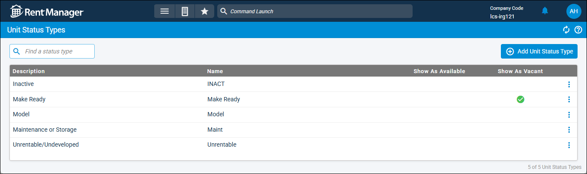

Source: https://rmxhelp.rentmanager.com/Topics/Express/CSH/Units-Status-Types.htm
Unit Status Types (Page)
Unit status types describe the current state of a unit. For example, you can create a status type of Pending Lock Change to indicate that the unit is awaiting new locks before the new tenant's arrival, or you can create a status type of Renovation to indicate that the unit is undergoing construction. Unit status types are applied to units over a period of time and determine whether the unit is available and/or vacant.
Related Privileges
| Group | Privilege | Column |
|---|---|---|
| Properties/Units | Unit status types | View |
For more information, refer to Control User Access.
To create and manage unit status types, go to  arrow_forward Rental Info arrow_forward
arrow_forward Rental Info arrow_forward  Rental Info Setup arrow_forward Properties/Units arrow_forward Unit Status Types.
Rental Info Setup arrow_forward Properties/Units arrow_forward Unit Status Types.
On the Unit Status Types page, every status type displays on a row with information organized into columns. Clicking on any status type opens the details page, where information specific to that status type is available. The Make Ready, Unrentable, and INACT system unit status types cannot be edited.

Column Descriptions
The following columns display on the page.
| Column | Description | |||||
|---|---|---|---|---|---|---|
|
Description |
A short summary of the unit status type. |
|||||
|
Name |
The unique name of this unit status type. The following statuses are system-generated and cannot be edited. |
|||||
|
||||||
|
Show As Available |
A |
|||||
| Show As Vacant |
A |